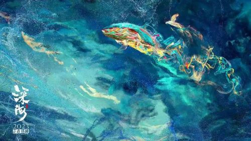

深海
故事背景
《深海》故事背景如下： 女主角参宿生活在父母离异的重组家庭，父亲的疏忽和继母的疏离使她敏感自卑。她随家人登上游轮旅行， 在生日那天，因诸多不如意，为救被暴风雨搁浅的小鱼，意外跌落大海。
剧情简介
参宿溺水后进入奇幻的深海世界，在海精灵引导下，来到深海大饭店，遇见老板南河等人。南河起初认为参宿是“晦气星”，但又不得不与她一起寻找通往“深海之眼”的路。 在这个过程中，参宿直面内心的恐惧、孤独和对母亲的思念。最终，南河为救参宿付出生命，参宿得以生还，实现了自我和解与成长。
人物介绍
- 吴京 饰 刘培强
- 刘德华 饰 图恒宇
- 李雪健 饰 周喆直
- 沙溢 饰 张鹏
- 宁理 饰 马兆
- 王智 饰 韩朵朵
电影评分
| 评分平台 | 评分 | 参与人数 |
|---|---|---|
| 豆瓣电影 | 7.3 | 48.6万余 |
| IMDb | 8.1 | 693 |